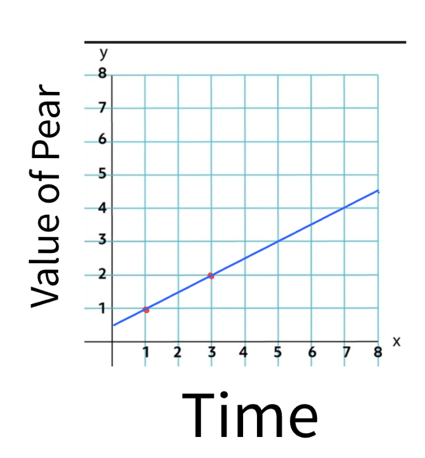
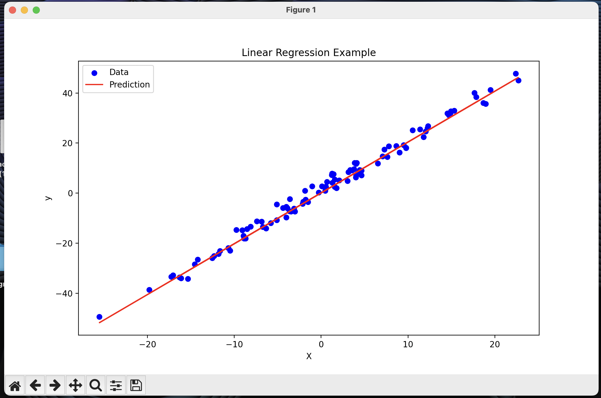
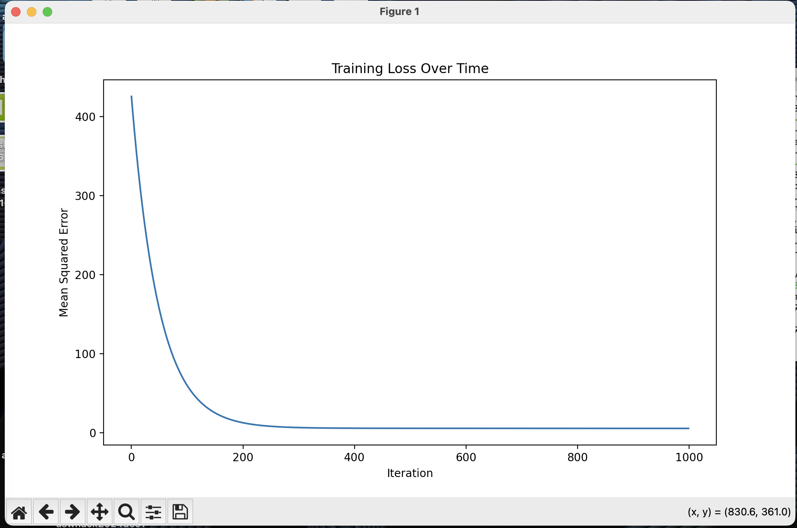

Machine Learning / Data Science:
Linear Regression | ASW Hack Club
Introduction:
Linear regression is important in machine learning and analytical tasks like K means and K nearest neighbor because it is able to predict the trend in data. This is just a simple loss minimization algorithm
If there is anything that I maybe forget to cover here that you want more information on, here are some really good sources that cover this.
Neural Nine's video on Linear Regression
Neural Nine's video on Linear Regression From Sratch
Nueral Nine's blog entry on Linear Regression From Scratch
If you are not able to see the trend in the links, I love Neural Nine. Most of my understanding is from a variety of his videos. I cannot recommend enough for you to watch his series on Machine Learning. It is truly amazing and easy to understand assuming you take notes and really think about what he is saying.
Use-case:
Linear regression is an algorithm that is able to predict the location of future datapoints based on datapoints that it already knows. For example, if I already know the price of a pear and the times of which that it held the price, I am able to predict the price of the pear in the future. We will take into account the positions of the pear and attempt to draw a line that will most closely follow the price of the pear.
This example only has two elements, but you are able to see that the algorithm will be looking to find the point that connects the most to all of the points in the data. This is really only able to work with two points in the configuration that it is in currently, if you want to be able to really predict the value of any meaningful data, we are going to get a basic understand of the concepts that make linear regression work.
Simplified Function:
To get a base understanding of the properties of the linear regression algorithm, we are going to expand upon our value of the pear example.
If the value of the pear example, we only had the two points of data and we were essentially playing connect the dots but with an infinite line. This is super simple, but not really useful.
When you are trying to get the mean direction that all of the data is heading, you need to take all data that is present into account. The way that the algorithm does this is by putting down a line, seeing how far the line is from every point in the data, and moving it until the average distance is as low as possible. Look at this gif to be able to get a better understanding of what I mean by this.
This example is showing the line moving according to the amount of error present in the data squared. It is squared to ensure that the error is positive as well as make the error bigger so that it is easier to adjust for to find what changes the value even if just by a little bit.
Now we understand the idea of moving the line to where it has the least distance to all of the points present in the data.
We now need to understand how the loss or error is calculated. There is another gif that is able to help us understand this.
A line is randomly drawn on the data initially, then the a line is drawn that finds the closest connection between the dot and the line, this is the loss of the initial line. The line is then moved in one direction, and the effect on the loss is recorded. If the loss goes down (meaning it is getting closer to the trend of the data) then it will keep moving in that direction. If the loss gets higher (meaning that the line is moving away from the trend of the data) then the move is reversed and it will begin to travel in the other direction. Once the physical location of the line is optimized, the rotation will begin spinning the line left and right to find the angle of the line that most closely aligns with the data, again moving in the same ways as before according to wether the error increases or decreases. They then take turns moving it and rotating it until the loss is at the lowest possible point.

This image really well shows how the algorithm is looking at the distance between all of the points and the line to be able to adjust the line to follow the overall trend of the data most cloesly.
Now that we know how it is done conceptually, let's dig into the math. This may appear complicated but I can assume that I am tottaly able to perfectly explain it first try with no confusing elements :).
The Math
First, here is the equation. You are able to hover over it to be able to get an understand of each of the elements purpose and function.
yThe predicted output (target variable). = w1The weight (coefficient) for feature x1, determining its contribution. x1The first input feature. + w2The weight (coefficient) for feature x2, determining its contribution. x2The second input feature. + ...Additional features and their weights can be added as needed + wnThe weight (coefficient) for feature xn, determining its contribution. xnThe nth input feature. + bThe bias (intercept), accounting for the baseline prediction when all features are zero.
For those of you (no judgement I didn't either) that still don't understand this, lets break it down more here.
The "Y is the predicted output, the target variable. This is what the model is going to try to estimate.
The weights w₁, w₂, ..., wₙ are the inputted weights from the model. The weight is used to gauge how importance an inputted value is in regard to the expected output. If this does not make sense it will later. The values of wn represent the important of the associated value in yn (being the y1, y2, ... yn).
b is for correcting for the y intercept if it is not 0.
The equation predicts 𝑦 as the weighted sum of the input features plus the bias term. The goal in linear regression is to find the optimal weights (the w values) that minimize the difference/deviation in the predicted values and the actual values that are present in the data. This connects to what I was saying earlier, you are moving around the values in w1, w2, ... wn and so on until you are able to make the line as closely match the data as possible.
If this math is not simple enough to understand, you might be able to look at the source paper that it was derived from. This is more complex as this page was simplified for a highschool understanding of mathematics, but you can view the source here and another source that was used in the creation here
Mean Squared Error (MSE)
The Mean Squared Error is how we measure how well our line fits the data. The smaller the MSE, the better our prediction line matches our actual data points.
The MSE can help identify overfitting or underfitting issues. A very small MSE on training data may suggest the model is overfitting, capturing noise in the data, while a larger MSE may suggest underfitting, where the model is too simple to capture the trend.
To prevent this, it's important to check how well the model performs on both the training data and new, unseen data, ensuring that the model generalizes well rather than just memorizing the training examples.
MSEMean Squared Error - measures how well our prediction matches reality = 1/mAverage over m data points, where m is the total number of samples ∑Sum up all the errors from i=1 to m (ypred,i - yactual,i)2Square of the difference between predicted value and actual value for each point i
Breaking down the MSE formula:
- We take each prediction our model makes (ypred) and compare it to the actual value (yactual)
- We square the difference to:
- Make all errors positive (since negative errors are just as bad as positive ones)
- Penalize larger errors more heavily than smaller ones
- We add up all these squared errors
- Finally, we take the average by dividing by the number of data points (m)
The goal of linear regression is to find the line that gives us the smallest possible MSE value.
Gradient Descent
To find the optimal weights and bias that minimize our MSE, we use an algorithm called Gradient Descent. This algorithm:
- Takes small steps in the direction that reduces the error the most
- Updates the weights and bias using partial derivatives of the MSE
- Repeats this process until the error can't be reduced further
w = w - α * ∂MSE/∂wUpdate rule for weights: current weight minus learning rate times partial derivative
b = b - α * ∂MSE/∂bUpdate rule for bias: current bias minus learning rate times partial derivative
Where α (alpha) is the learning rate that controls how big our steps are when updating the parameters.
Python Implementation
Here's a complete implementation of linear regression from scratch:
import numpy as np
import matplotlib.pyplot as plt
class LinearRegression:
def __init__(self, learning_rate=0.01, n_iterations=1000):
self.learning_rate = learning_rate
self.n_iterations = n_iterations
self.weights = None
self.bias = None
self.history = {'loss': []}
def fit(self, X, y):
# Initialize parameters
n_samples, n_features = X.shape
self.weights = np.zeros(n_features)
self.bias = 0
# Gradient descent
for _ in range(self.n_iterations):
# Forward pass (make predictions)
y_predicted = self._predict(X)
# Calculate gradients
dw = (1/n_samples) * np.dot(X.T, (y_predicted - y))
db = (1/n_samples) * np.sum(y_predicted - y)
# Update parameters
self.weights -= self.learning_rate * dw
self.bias -= self.learning_rate * db
# Calculate and store loss
loss = self._mse(y, y_predicted)
self.history['loss'].append(loss)
def _predict(self, X):
return np.dot(X, self.weights) + self.bias
def predict(self, X):
return self._predict(X)
def _mse(self, y_true, y_pred):
return np.mean((y_true - y_pred) ** 2)
# Example usage:
if __name__ == "__main__":
# Generate sample data
np.random.seed(0)
X = np.random.randn(100, 1) * 10
y = 2 * X.squeeze() + 1 + np.random.randn(100) * 2
# Create and train model
model = LinearRegression(learning_rate=0.0001, n_iterations=1000)
model.fit(X, y)
# Make predictions
y_pred = model.predict(X)
# Plot results
plt.figure(figsize=(10, 6))
plt.scatter(X, y, color='blue', label='Data')
plt.plot(X, y_pred, color='red', label='Prediction')
plt.xlabel('X')
plt.ylabel('y')
plt.legend()
plt.title('Linear Regression Example')
plt.show()
# Plot loss history
plt.figure(figsize=(10, 6))
plt.plot(model.history['loss'])
plt.xlabel('Iteration')
plt.ylabel('Mean Squared Error')
plt.title('Training Loss Over Time')
plt.show()
Code Explanation
The implementation above includes several key components:
- Initialization: We start with random weights and zero bias
- Forward Pass: Predictions are made using the equation y = wx + b
- Backward Pass: We calculate gradients to update our parameters
- Parameter Updates: Weights and bias are updated using gradient descent
- Loss Tracking: We monitor the MSE throughout training
The example also includes visualization code to show:
- The fitted line against the original data points
- How the loss (MSE) decreases during training
This implementation can be extended to handle multiple features and can be modified to include regularization terms if needed.
Code Preview
This is just a preview for what the code looks like with its function.
This is the regression line with the test data:
This is the loss over time graph showing how far the line was from the goal:
If there are any edits that you would like to request to be added to this, please submit them in an issue in the GitHub or you can send an email to sysadmin@silverflag.net